Download OpenAPI specification:
Sustainable Smart Personal Assistant for Responsible Consumption & Code Evaluation Microservice
Welcome to the official developer documentation and API reference for S-SPARC (Sustainable Smart Personal Assistant for Responsible Consumption) integrated with the E-STRANGE Learning Management Platform.
S-SPARC is engineered around 4 core operational tiers designed for high-concurrency academic software engineering tutoring:
suspicion), peer reviews (code_clarity_suggestion), gamification leaderboards, and grade tracking.The updated Adaptive Router intelligently routes student inference requests based on course game policy and Gemini key availability:
game_course.is_active = 1):game_course.is_active = 0):GAME_OFF_TOKEN_LIMIT=5000 tokens). Gamification points are NOT deducted (0 pts).GEMINI_API_KEY_1..6) experience rate limits, request automatically fails over to Local Ollama (fallback_triggered = True) without deducting points.Dokumen ini berisi dokumentasi visual alur proses (flowchart & sequence diagram) menyeluruh yang terjadi pada sistem E-STRANGE (PHP E-Learning & Assessment Framework) dan S-SPARC (FastAPI AI Assistant Backend) setelah pembaruan arsitektur Hybrid LLM (Gemini Flash Lite 6-Key Pool, Ollama Qwen2.5-Coder 14B, & Adaptive Router).
game_course.is_active)Diagram ini memperlihatkan alur pengiriman tugas koding oleh mahasiswa pada sistem E-STRANGE, analisis kemiripan kode (plagiarism/similarity check), serta ekstraksi nilai Originalitas (originality_point) dan Efisiensi (efficiency_point).
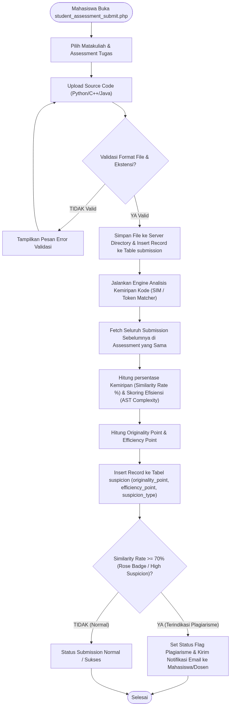
flowchart TD
Start(["Mahasiswa Buka student_assessment_submit.php"]) --> SelectAssessment["Pilih Matakuliah & Assessment Tugas"]
SelectAssessment --> UploadCode["Upload Source Code (Python/C++/Java)"]
UploadCode --> FormValidate{"Validasi Format File & Ekstensi?"}
FormValidate -- "TIDAK Valid" --> ShowError["Tampilkan Pesan Error Validasi"]
ShowError --> UploadCode
FormValidate -- "YA Valid" --> SaveSubmission["Simpan File ke Server Directory & Insert Record ke Table submission"]
SaveSubmission --> SimEngine["Jalankan Engine Analisis Kemiripan Kode (SIM / Token Matcher)"]
SimEngine --> QueryPrevious["Fetch Seluruh Submission Sebelumnya di Assessment yang Sama"]
QueryPrevious --> CompareSim["Hitung persentase Kemiripan (Similarity Rate %) & Skoring Efisiensi (AST Complexity)"]
CompareSim --> CalcPoints["Hitung Originality Point & Efficiency Point"]
CalcPoints --> SaveSuspicion["Insert Record ke Tabel suspicion (originality_point, efficiency_point, suspicion_type)"]
SaveSuspicion --> CheckSuspicionLimit{"Similarity Rate >= 70% (Rose Badge / High Suspicion)?"}
CheckSuspicionLimit -- "YA (Terindikasi Plagiarisme)" --> FlagSuspicious["Set Status Flag Plagiarisme & Kirim Notifikasi Email ke Mahasiswa/Dosen"]
CheckSuspicionLimit -- "TIDAK (Normal)" --> CompleteSub["Status Submission Normal / Sukses"]
FlagSuspicious --> End(["Selesai"])
CompleteSub --> End
Diagram ini menggambarkan alur penilaian antar sejawat (Peer Review) di mana mahasiswa saling memeriksa kode rekan sejawat dan memberikan penilaian kejelasan kode (quality_point).
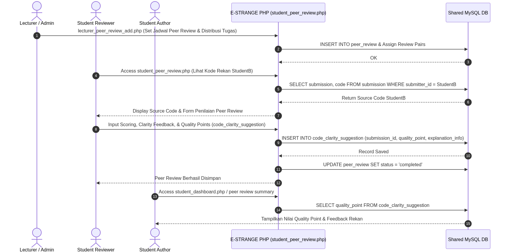
sequenceDiagram
autonumber
actor Lecturer as Lecturer / Admin
actor StudentA as Student Reviewer
actor StudentB as Student Author
participant PHP as E-STRANGE PHP (student_peer_review.php)
participant DB as Shared MySQL DB
Lecturer->>PHP: lecturer_peer_review_add.php (Set Jadwal Peer Review & Distribusi Tugas)
PHP->>DB: INSERT INTO peer_review & Assign Review Pairs
DB-->>PHP: OK
StudentA->>PHP: Access student_peer_review.php (Lihat Kode Rekan StudentB)
PHP->>DB: SELECT submission, code FROM submission WHERE submitter_id = StudentB
DB-->>PHP: Return Source Code StudentB
PHP-->>StudentA: Display Source Code & Form Penilaian Peer Review
StudentA->>PHP: Input Scoring, Clarity Feedback, & Quality Points (code_clarity_suggestion)
PHP->>DB: INSERT INTO code_clarity_suggestion (submission_id, quality_point, explanation_info)
DB-->>PHP: Record Saved
PHP->>DB: UPDATE peer_review SET status = 'completed'
PHP-->>StudentA: Peer Review Berhasil Disimpan
StudentB->>PHP: Access student_dashboard.php / peer review summary
PHP->>DB: SELECT quality_point FROM code_clarity_suggestion
DB-->>StudentB: Tampilkan Nilai Quality Point & Feedback Rekan
Diagram ini memperlihatkan prosedur penanganan ketika mahasiswa terdeteksi memiliki kemiripan kode tinggi (Suspicion Report), lalu mahasiswa mengajukan klarafikasi/pembelaan (defense response).
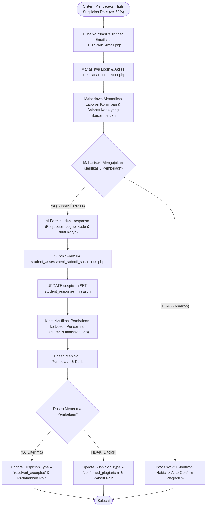
flowchart TD
Start(["Sistem Mendeteksi High Suspicion Rate (>= 70%)"]) --> CreateNotif["Buat Notifikasi & Trigger Email via _suspicion_email.php"]
CreateNotif --> StudentLogin["Mahasiswa Login & Akses user_suspicion_report.php"]
StudentLogin --> ViewReport["Mahasiswa Memeriksa Laporan Kemiripan & Snippet Kode yang Berdampingan"]
ViewReport --> DecideResponse{"Mahasiswa Mengajukan Klarifikasi / Pembelaan?"}
DecideResponse -- "YA (Submit Defense)" --> FillReason["Isi Form student_response (Penjelasan Logika Kode & Bukti Karya)"]
FillReason --> SubmitDefense["Submit Form ke student_assessment_submit_suspicious.php"]
SubmitDefense --> UpdateDB["UPDATE suspicion SET student_response = :reason"]
UpdateDB --> NotifLecturer["Kirim Notifikasi Pembelaan ke Dosen Pengampu (lecturer_submission.php)"]
NotifLecturer --> LecturerReview["Dosen Meninjau Pembelaan & Kode"]
LecturerReview --> LecturerDecision{"Dosen Menerima Pembelaan?"}
LecturerDecision -- "YA (Diterima)" --> AcceptReason["Update Suspicion Type = 'resolved_accepted' & Pertahankan Poin"]
LecturerDecision -- "TIDAK (Ditolak)" --> RejectReason["Update Suspicion Type = 'confirmed_plagiarism' & Penalti Poin"]
DecideResponse -- "TIDAK (Abaikan)" --> TimeoutPeriod["Batas Waktu Klarifikasi Habis -> Auto-Confirm Plagiarism"]
AcceptReason --> End(["Selesai"])
RejectReason --> End
TimeoutPeriod --> End
game_course.is_active)Diagram ini memperlihatkan alur kerja Admin/Dosen dalam membuat mata kuliah, menambah assessment, serta mengaktifkan atau mematikan fitur gamifikasi (game_course.is_active = 1 atau 0).
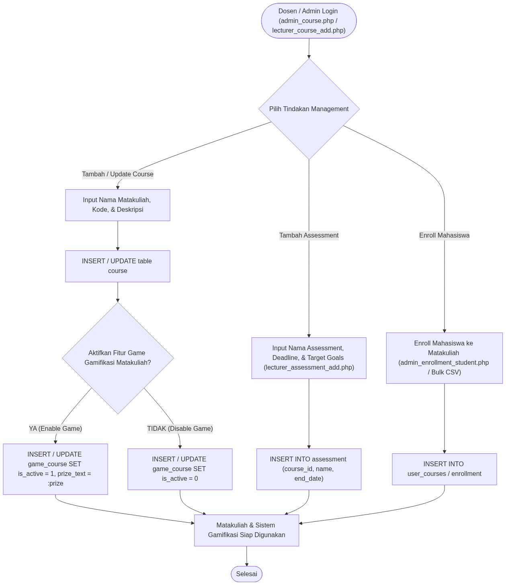
flowchart TD
Start(["Dosen / Admin Login (admin_course.php / lecturer_course_add.php)"]) --> ActionType{"Pilih Tindakan Management"}
ActionType -- "Tambah / Update Course" --> InputCourse["Input Nama Matakuliah, Kode, & Deskripsi"]
InputCourse --> SaveCourse["INSERT / UPDATE table course"]
SaveCourse --> ToggleGame{"Aktifkan Fitur Game Gamifikasi Matakuliah?"}
ToggleGame -- "YA (Enable Game)" --> SetGameActive["INSERT / UPDATE game_course SET is_active = 1, prize_text = :prize"]
ToggleGame -- "TIDAK (Disable Game)" --> SetGameInactive["INSERT / UPDATE game_course SET is_active = 0"]
ActionType -- "Tambah Assessment" --> InputAssessment["Input Nama Assessment, Deadline, & Target Goals (lecturer_assessment_add.php)"]
InputAssessment --> SaveAssessment["INSERT INTO assessment (course_id, name, end_date)"]
ActionType -- "Enroll Mahasiswa" --> StudentEnroll["Enroll Mahasiswa ke Matakuliah (admin_enrollment_student.php / Bulk CSV)"]
StudentEnroll --> SaveEnrollment["INSERT INTO user_courses / enrollment"]
SetGameActive --> SystemReady["Matakuliah & Sistem Gamifikasi Siap Digunakan"]
SetGameInactive --> SystemReady
SaveAssessment --> SystemReady
SaveEnrollment --> SystemReady
SystemReady --> End(["Selesai"])
Diagram ini menggambarkan alur perhitungan akumulasi poin gamifikasi siswa dari 3 tabel E-STRANGE, serta opsi mahasiswa untuk mengaktifkan/mematikan keikutsertaan game (student_game_toggle.php).
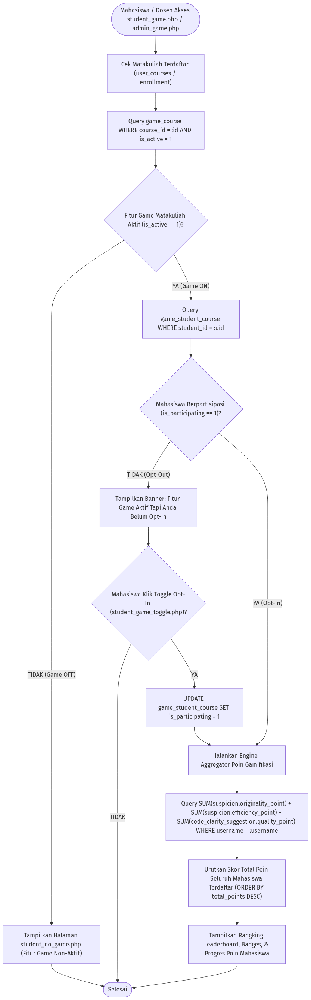
flowchart TD
Start(["Mahasiswa / Dosen Akses student_game.php / admin_game.php"]) --> CheckEnrollment["Cek Matakuliah Terdaftar (user_courses / enrollment)"]
CheckEnrollment --> QueryGameCourse["Query game_course WHERE course_id = :id AND is_active = 1"]
QueryGameCourse --> IsGameOn{"Fitur Game Matakuliah Aktif (is_active == 1)?"}
IsGameOn -- "TIDAK (Game OFF)" --> ShowNoGame["Tampilkan Halaman student_no_game.php (Fitur Game Non-Aktif)"]
ShowNoGame --> End(["Selesai"])
IsGameOn -- "YA (Game ON)" --> CheckParticipation["Query game_student_course WHERE student_id = :uid"]
CheckParticipation --> IsParticipating{"Mahasiswa Berpartisipasi (is_participating == 1)?"}
IsParticipating -- "TIDAK (Opt-Out)" --> ShowOptInNotice["Tampilkan Banner: Fitur Game Aktif Tapi Anda Belum Opt-In"]
ShowOptInNotice --> ToggleAction{"Mahasiswa Klik Toggle Opt-In (student_game_toggle.php)?"}
ToggleAction -- "YA" --> UpdateOptIn["UPDATE game_student_course SET is_participating = 1"]
UpdateOptIn --> FetchPointsEngine
ToggleAction -- "TIDAK" --> End
IsParticipating -- "YA (Opt-In)" --> FetchPointsEngine["Jalankan Engine Aggregator Poin Gamifikasi"]
FetchPointsEngine --> QueryPointsDB["Query SUM(suspicion.originality_point) + SUM(suspicion.efficiency_point) + SUM(code_clarity_suggestion.quality_point) WHERE username = :username"]
QueryPointsDB --> ComputeLeaderboard["Urutkan Skor Total Poin Seluruh Mahasiswa Terdaftar (ORDER BY total_points DESC)"]
ComputeLeaderboard --> RenderDashboard["Tampilkan Rangking Leaderboard, Badges, & Progres Poin Mahasiswa"]
RenderDashboard --> End
Diagram ini menggambarkan hubungan dan alur komunikasi data antara Pengguna, Frontend E-STRANGE (PHP), Backend S-SPARC (FastAPI), Database MySQL Bersama, Cloud Gemini Gateway, Local Ollama, dan Evaluator Service.
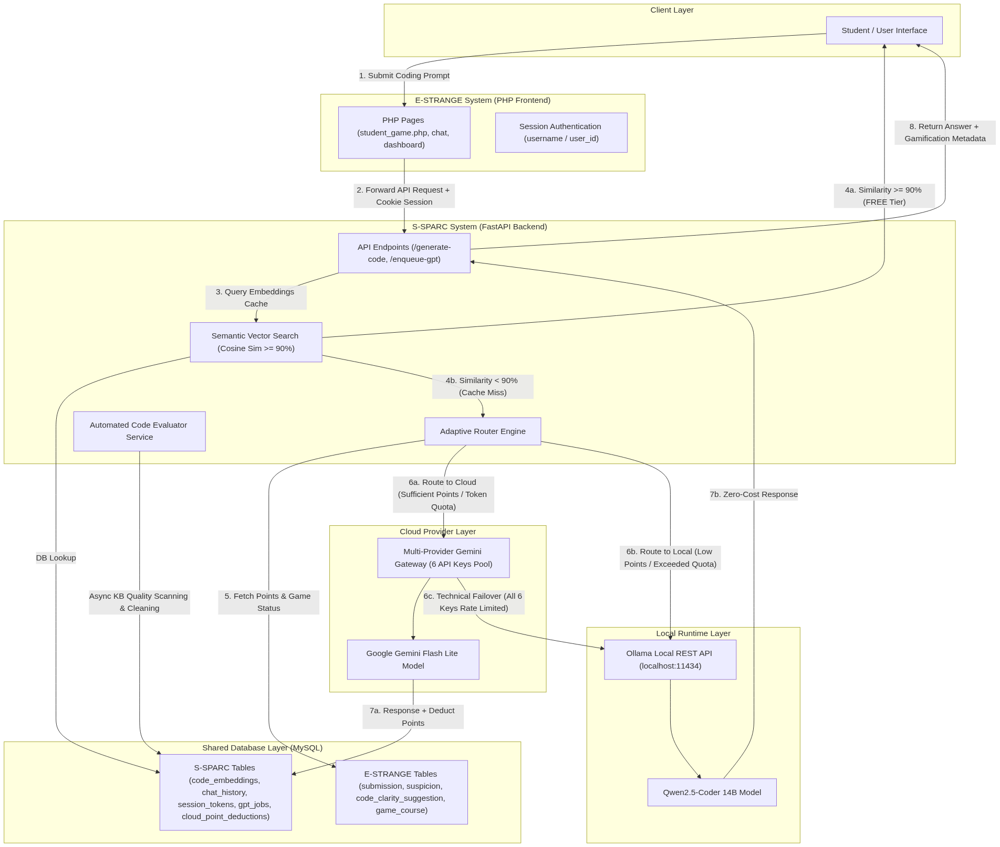
flowchart TD
subgraph Client ["Client Layer"]
User["Student / User Interface"]
end
subgraph Frontend ["E-STRANGE System (PHP Frontend)"]
PHP_UI["PHP Pages (student_game.php, chat, dashboard)"]
PHP_Auth["Session Authentication (username / user_id)"]
end
subgraph Backend ["S-SPARC System (FastAPI Backend)"]
API_Gateway["API Endpoints (/generate-code, /enqueue-gpt)"]
Semantic_Search["Semantic Vector Search (Cosine Sim >= 90%)"]
Adaptive_Router["Adaptive Router Engine"]
Evaluator_Service["Automated Code Evaluator Service"]
end
subgraph DB ["Shared Database Layer (MySQL)"]
Estrange_Tables["E-STRANGE Tables (submission, suspicion, code_clarity_suggestion, game_course)"]
SSparc_Tables["S-SPARC Tables (code_embeddings, chat_history, session_tokens, gpt_jobs, cloud_point_deductions)"]
end
subgraph LLM_Cloud ["Cloud Provider Layer"]
Gemini_Pool["Multi-Provider Gemini Gateway (6 API Keys Pool)"]
Gemini_API["Google Gemini Flash Lite Model"]
end
subgraph LLM_Local ["Local Runtime Layer"]
Ollama_Server["Ollama Local REST API (localhost:11434)"]
Ollama_Model["Qwen2.5-Coder 14B Model"]
end
User -->|"1. Submit Coding Prompt"| PHP_UI
PHP_UI -->|"2. Forward API Request + Cookie Session"| API_Gateway
API_Gateway -->|"3. Query Embeddings Cache"| Semantic_Search
Semantic_Search -->|"DB Lookup"| SSparc_Tables
Semantic_Search -->|"4a. Similarity >= 90% (FREE Tier)"| User
Semantic_Search -->|"4b. Similarity < 90% (Cache Miss)"| Adaptive_Router
Adaptive_Router -->|"5. Fetch Points & Game Status"| Estrange_Tables
Adaptive_Router -->|"6a. Route to Cloud (Sufficient Points / Token Quota)"| Gemini_Pool
Gemini_Pool --> Gemini_API
Adaptive_Router -->|"6b. Route to Local (Low Points / Exceeded Quota)"| Ollama_Server
Gemini_Pool -->|"6c. Technical Failover (All 6 Keys Rate Limited)"| Ollama_Server
Ollama_Server --> Ollama_Model
Gemini_API -->|"7a. Response + Deduct Points"| SSparc_Tables
Ollama_Model -->|"7b. Zero-Cost Response"| API_Gateway
API_Gateway -->|"8. Return Answer + Gamification Metadata"| User
Evaluator_Service -->|"Async KB Quality Scanning & Cleaning"| SSparc_Tables
Diagram ini memperlihatkan alur logika eksekusi keputusan pada AdaptiveRouter, mulai dari pengecekan cache vektor, penentuan status game matakuliah (game_course.is_active), pengecekan poin gamifikasi/kuota token, hingga failover teknis.
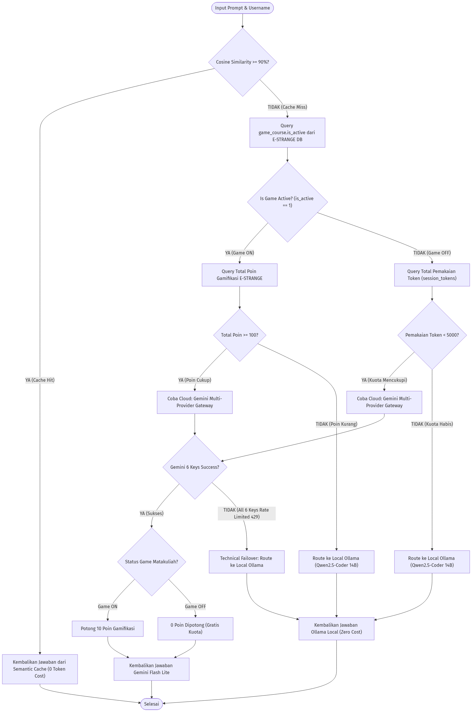
flowchart TD
Start(["Input Prompt & Username"]) --> CheckCache{"Cosine Similarity >= 90%?"}
CheckCache -- "YA (Cache Hit)" --> ReturnCache["Kembalikan Jawaban dari Semantic Cache (0 Token Cost)"]
ReturnCache --> End(["Selesai"])
CheckCache -- "TIDAK (Cache Miss)" --> CheckGameStatus["Query game_course.is_active dari E-STRANGE DB"]
CheckGameStatus --> IsGameActive{"Is Game Active? (is_active == 1)"}
%% Branch 1: Game ON
IsGameActive -- "YA (Game ON)" --> FetchPoints["Query Total Poin Gamifikasi E-STRANGE"]
FetchPoints --> CheckPoints{"Total Poin >= 100?"}
CheckPoints -- "YA (Poin Cukup)" --> TryGeminiCloud1["Coba Cloud: Gemini Multi-Provider Gateway"]
CheckPoints -- "TIDAK (Poin Kurang)" --> RouteOllama1["Route ke Local Ollama (Qwen2.5-Coder 14B)"]
%% Branch 2: Game OFF
IsGameActive -- "TIDAK (Game OFF)" --> FetchTokenUsage["Query Total Pemakaian Token (session_tokens)"]
FetchTokenUsage --> CheckTokenQuota{"Pemakaian Token < 5000?"}
CheckTokenQuota -- "YA (Kuota Mencukupi)" --> TryGeminiCloud2["Coba Cloud: Gemini Multi-Provider Gateway"]
CheckTokenQuota -- "TIDAK (Kuota Habis)" --> RouteOllama2["Route ke Local Ollama (Qwen2.5-Coder 14B)"]
%% Cloud Execution & Failover
TryGeminiCloud1 --> GeminiExec{"Gemini 6 Keys Success?"}
TryGeminiCloud2 --> GeminiExec
GeminiExec -- "YA (Sukses)" --> DeductPointsLogic{"Status Game Matakuliah?"}
DeductPointsLogic -- "Game ON" --> Deduct10["Potong 10 Poin Gamifikasi"]
DeductPointsLogic -- "Game OFF" --> Deduct0["0 Poin Dipotong (Gratis Kuota)"]
Deduct10 --> ReturnCloudResp["Kembalikan Jawaban Gemini Flash Lite"]
Deduct0 --> ReturnCloudResp
GeminiExec -- "TIDAK (All 6 Keys Rate Limited 429)" --> FailoverOllama["Technical Failover: Route ke Local Ollama"]
RouteOllama1 --> ReturnOllamaResp["Kembalikan Jawaban Ollama Local (Zero Cost)"]
RouteOllama2 --> ReturnOllamaResp
FailoverOllama --> ReturnOllamaResp
ReturnCloudResp --> End
ReturnOllamaResp --> End
Diagram ini memperlihatkan mekanisme rotasi 6 API Key Gemini Flash Lite (GEMINI_API_KEY_1..6) dalam penanganan error HTTP 429 (Rate Limit).
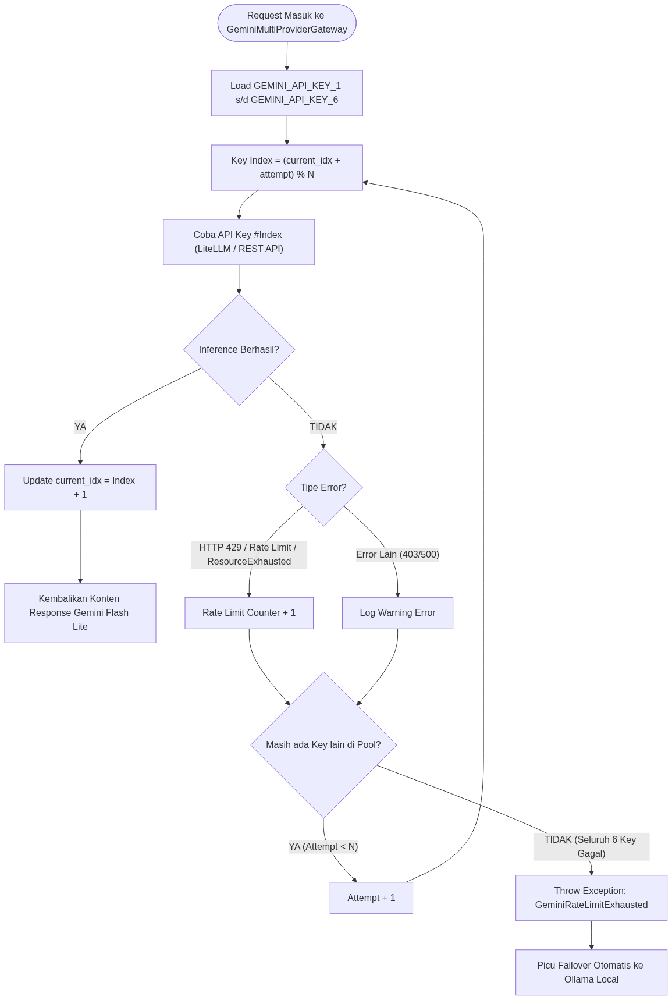
flowchart TD
InitGateway(["Request Masuk ke GeminiMultiProviderGateway"]) --> LoadKeys["Load GEMINI_API_KEY_1 s/d GEMINI_API_KEY_6"]
LoadKeys --> SetIndex["Key Index = (current_idx + attempt) % N"]
SetIndex --> TryKey1["Coba API Key #Index (LiteLLM / REST API)"]
TryKey1 --> CheckSuccess{"Inference Berhasil?"}
CheckSuccess -- "YA" --> UpdateIndex["Update current_idx = Index + 1"]
UpdateIndex --> ReturnSuccess["Kembalikan Konten Response Gemini Flash Lite"]
CheckSuccess -- "TIDAK" --> CheckErrorType{"Tipe Error?"}
CheckErrorType -- "HTTP 429 / Rate Limit / ResourceExhausted" --> IncrementLimitCount["Rate Limit Counter + 1"]
CheckErrorType -- "Error Lain (403/500)" --> LogWarning["Log Warning Error"]
IncrementLimitCount --> HasMoreKeys{"Masih ada Key lain di Pool?"}
LogWarning --> HasMoreKeys
HasMoreKeys -- "YA (Attempt < N)" --> NextAttempt["Attempt + 1"]
NextAttempt --> SetIndex
HasMoreKeys -- "TIDAK (Seluruh 6 Key Gagal)" --> RaiseExhausted["Throw Exception: GeminiRateLimitExhausted"]
RaiseExhausted --> TriggerFailover["Picu Failover Otomatis ke Ollama Local"]
Diagram ini menggambarkan urutan interaksi objek (sequence) antara FastAPI Handler, PointsAggregator, AdaptiveRouter, Database E-STRANGE, dan Gemini Gateway.
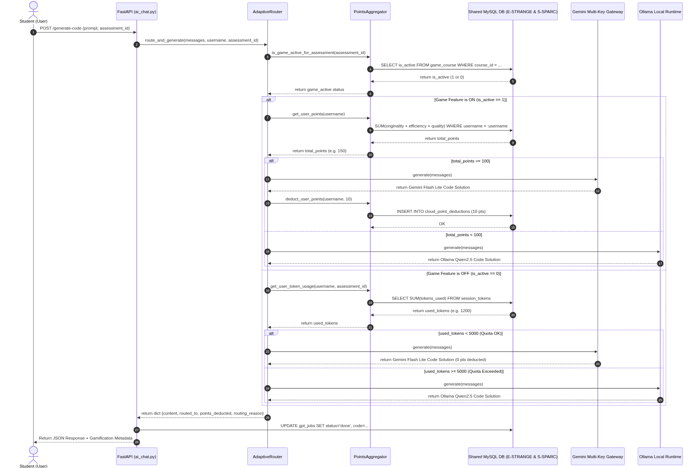
sequenceDiagram
autonumber
actor Student as Student (User)
participant API as FastAPI (ai_chat.py)
participant Router as AdaptiveRouter
participant Aggregator as PointsAggregator
participant DB as Shared MySQL DB (E-STRANGE & S-SPARC)
participant Gemini as Gemini Multi-Key Gateway
participant Ollama as Ollama Local Runtime
Student->>API: POST /generate-code (prompt, assessment_id)
API->>Router: route_and_generate(messages, username, assessment_id)
Router->>Aggregator: is_game_active_for_assessment(assessment_id)
Aggregator->>DB: SELECT is_active FROM game_course WHERE course_id = ...
DB-->>Aggregator: return is_active (1 or 0)
Aggregator-->>Router: return game_active status
alt Game Feature is ON (is_active == 1)
Router->>Aggregator: get_user_points(username)
Aggregator->>DB: SUM(originality + efficiency + quality) WHERE username = :username
DB-->>Aggregator: return total_points
Aggregator-->>Router: return total_points (e.g. 150)
alt total_points >= 100
Router->>Gemini: generate(messages)
Gemini-->>Router: return Gemini Flash Lite Code Solution
Router->>Aggregator: deduct_user_points(username, 10)
Aggregator->>DB: INSERT INTO cloud_point_deductions (10 pts)
DB-->>Aggregator: OK
else total_points < 100
Router->>Ollama: generate(messages)
Ollama-->>Router: return Ollama Qwen2.5 Code Solution
end
else Game Feature is OFF (is_active == 0)
Router->>Aggregator: get_user_token_usage(username, assessment_id)
Aggregator->>DB: SELECT SUM(tokens_used) FROM session_tokens
DB-->>Aggregator: return used_tokens (e.g. 1200)
Aggregator-->>Router: return used_tokens
alt used_tokens < 5000 (Quota OK)
Router->>Gemini: generate(messages)
Gemini-->>Router: return Gemini Flash Lite Code Solution (0 pts deducted)
else used_tokens >= 5000 (Quota Exceeded)
Router->>Ollama: generate(messages)
Ollama-->>Router: return Ollama Qwen2.5 Code Solution
end
end
Router-->>API: return dict {content, routed_to, points_deducted, routing_reason}
API->>DB: UPDATE gpt_jobs SET status='done', code=...
API-->>Student: Return JSON Response + Gamification Metadata
Diagram ini memperlihatkan bagaimana kode solusi baru yang dihasilkan LLM secara otomatis di-vektorisasi dan masuk ke knowledge base, serta bagaimana Evaluator Service melakukan pembersihan otomatis secara berkala.
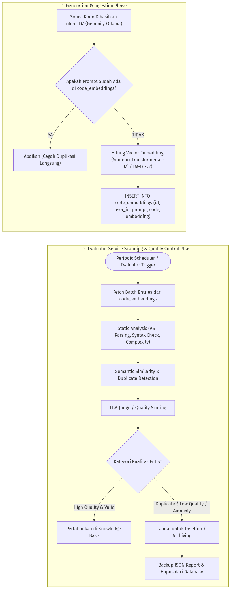
flowchart TD
subgraph Generation ["1. Generation & Ingestion Phase"]
NewSolution["Solusi Kode Dihasilkan oleh LLM (Gemini / Ollama)"] --> IngestCheck{"Apakah Prompt Sudah Ada di code_embeddings?"}
IngestCheck -- "YA" --> SkipIngest["Abaikan (Cegah Duplikasi Langsung)"]
IngestCheck -- "TIDAK" --> CalcEmb["Hitung Vector Embedding (SentenceTransformer all-MiniLM-L6-v2)"]
CalcEmb --> InsertKB["INSERT INTO code_embeddings (id, user_id, prompt, code, embedding)"]
end
subgraph Cleaning ["2. Evaluator Service Scanning & Quality Control Phase"]
CronTrigger(["Periodic Scheduler / Evaluator Trigger"]) --> FetchBatch["Fetch Batch Entries dari code_embeddings"]
FetchBatch --> StaticAnalysis["Static Analysis (AST Parsing, Syntax Check, Complexity)"]
StaticAnalysis --> SimCheck["Semantic Similarity & Duplicate Detection"]
SimCheck --> LLMJudge["LLM Judge / Quality Scoring"]
LLMJudge --> ClassifyEntry{"Kategori Kualitas Entry?"}
ClassifyEntry -- "High Quality & Valid" --> KeepEntry["Pertahankan di Knowledge Base"]
ClassifyEntry -- "Duplicate / Low Quality / Anomaly" --> FlagDelete["Tandai untuk Deletion / Archiving"]
FlagDelete --> SoftDelete["Backup JSON Report & Hapus dari Database"]
end
InsertKB --> CronTrigger
Diagram ini menggambarkan bagaimana setiap request inferensi dihitung dampak konsumsi energi, emisi karbon, dan penggunaan airnya.
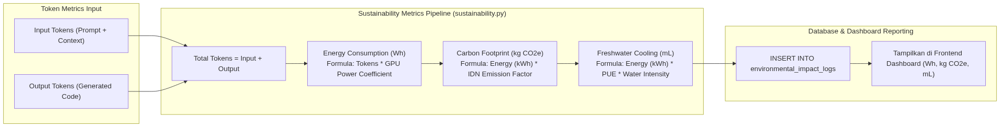
flowchart LR
subgraph Input ["Token Metrics Input"]
InTokens["Input Tokens (Prompt + Context)"]
OutTokens["Output Tokens (Generated Code)"]
end
subgraph Calculation ["Sustainability Metrics Pipeline (sustainability.py)"]
TotalTokens["Total Tokens = Input + Output"]
EnergyCalc["Energy Consumption (Wh)<br/>Formula: Tokens * GPU Power Coefficient"]
CarbonCalc["Carbon Footprint (kg CO2e)<br/>Formula: Energy (kWh) * IDN Emission Factor"]
WaterCalc["Freshwater Cooling (mL)<br/>Formula: Energy (kWh) * PUE * Water Intensity"]
end
subgraph Output ["Database & Dashboard Reporting"]
LogDB["INSERT INTO environmental_impact_logs"]
UI_Dashboard["Tampilkan di Frontend Dashboard (Wh, kg CO2e, mL)"]
end
InTokens --> TotalTokens
OutTokens --> TotalTokens
TotalTokens --> EnergyCalc
EnergyCalc --> CarbonCalc
CarbonCalc --> WaterCalc
WaterCalc --> LogDB
LogDB --> UI_Dashboard
mysql -u root -p -e "CREATE DATABASE IF NOT EXISTS estrange_ssparc;"
mysql -u root -p estrange_ssparc < db_semantic_vfinal.sql
.env)MYSQL_HOST=127.0.0.1
MYSQL_PORT=3306
MYSQL_USER=root
MYSQL_PASSWORD=your_password
MYSQL_DB=estrange_ssparc
GEMINI_API_KEY_1=AIzaSy...
GEMINI_API_KEY_2=AIzaSy...
OLLAMA_BASE_URL=http://localhost:11434
OLLAMA_MODEL=qwen2.5-coder:14b
MIN_POINTS_CLOUD=100
POINTS_PER_CLOUD_REQUEST=10
GAME_OFF_TOKEN_LIMIT=5000
FLASK_SECRET_KEY=supersecretkey_ssparc_2026
cd estrange/v2/v2
php -S 0.0.0.0:8080
cd frontend
php -S 0.0.0.0:8000
python run_fastapi.py
$$ ext{Energy (Wh)} = P_{ ext{GPU/CPU}} imes T_{ ext{inference}}$$
$$ ext{Carbon (kg CO}_2 ext{e)} = rac{ ext{Energy (Wh)}}{1000} imes ext{Emission Factor (0.725 kg CO}_2 ext{e/kWh)}$$
$$ ext{Water (mL)} = ext{Energy (kWh)} imes ext{Cooling Factor (1.8 L/kWh)} imes 1000$$
$$ ext{Eco Token Threshold} = \max(0, 1.10 imes ext{Peer Average Tokens})$$
User registration, login session establishment, whoami profile validation, and password recovery.
Registers a new student or instructor user account with SHA-256 password hashing.
| username required | string |
| email required | string |
| password required | string |
{- "username": "mahasiswa_sipil_2026",
- "email": "mahasiswa@s-sparc.ac.id",
- "password": "RahasiaSuper123!"
}{- "message": "Registrasi berhasil."
}Authenticates credentials against database records, establishing a secure HTTP-only session cookie.
| username required | string |
| password required | string |
{- "username": "mahasiswa_sipil_2026",
- "password": "RahasiaSuper123!"
}{- "message": "Login berhasil."
}Retrieves user details of the active authenticated session.
{- "user_id": "usr-8f3a-9901-b2c3",
- "username": "mahasiswa_sipil_2026",
- "email": "mahasiswa@s-sparc.ac.id",
- "is_admin": 0
}Allows logged-in users to update password by verifying current credentials.
| old_password required | string |
| new_password required | string |
{- "old_password": "string",
- "new_password": "string"
}Generates a 32-character reset token and 6-digit OTP code for password recovery.
| username required | string |
| email required | string |
{- "username": "string",
- "email": "string"
}Resets password by verifying matched username and registered email.
| username required | string |
| email required | string |
| new_password required | string |
{- "username": "string",
- "email": "string",
- "new_password": "string"
}Eco-aware programming assistant with Semantic Search Fast-Path (0 Token / FREE Tier), streaming inference, and auto-knowledge ingestion.
Processes coding prompts via Semantic Search fast-path (FREE tier, similarity >= 90%),
or falls back to queued GPT inference with auto-vectorization into code_embeddings.
| prompt required | string |
| assessment_id | string |
| language | string |
| response_mode | string |
{- "prompt": "Buatkan fungsi Python untuk menghitung debit air sungai berdasarkan metode rasional Q = C * I * A.",
- "assessment_id": "ASSESS-CIVIL-2026-01",
- "language": "python",
- "response_mode": "code"
}{- "status": "fast_path",
- "job_id": "e6f47021-9876-4321-a1b2-c3d4e5f67890",
- "response": "def calculate_discharge(C, I, A):\n \"\"\"\n Menghitung debit limpasan permukaan (Metode Rasional)\n Q = C * I * A\n \"\"\"\n return C * I * A",
- "similarity": 0.945,
- "tokens_used": 0,
- "free_tier": true
}Queries status of asynchronous GPT generation jobs.
| job_id required | string Job UUID string |
{- "job_id": "b1a2c3d4-5678-90ef-1234-567890abcdef",
- "status": "completed",
- "response": "def calculate_discharge(C, I, A):\n return C * I * A"
}Academic course enrollment, assessment tracking, daily/weekly token quota consumption, scientific environmental metrics, and leaderboards.
Retrieves enrolled academic courses for the student.
{- "courses": [
- {
- "course_id": "CIVIL-101",
- "name": "Mekanika Tanah & Hidrologi",
- "description": "Mata kuliah teknik sipil dasar."
}
]
}Returns token usage, peer usage averages, eco threshold, efficiency score, and scientific footprint metrics (energy Wh, carbon kg CO2e, water mL).
| assessment_id | string |
{- "user_tokens": 1250,
- "avg_tokens": 2800,
- "threshold": 3080,
- "eco_points": 95,
- "environmental_footprint": {
- "energy_wh": 14.5,
- "carbon_kg": 0.0105,
- "water_ml": 26.1
}
}Restricted instructor and administrator tools: aggregate sustainability metrics, CSV exports, and point recalculation algorithms.